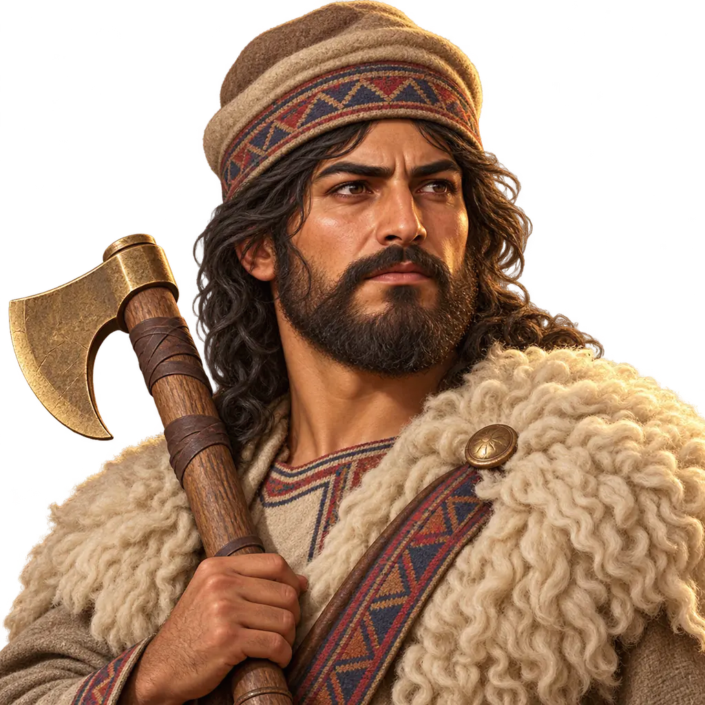
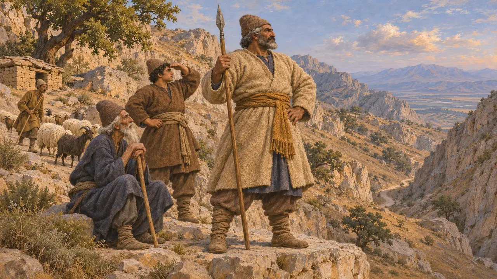
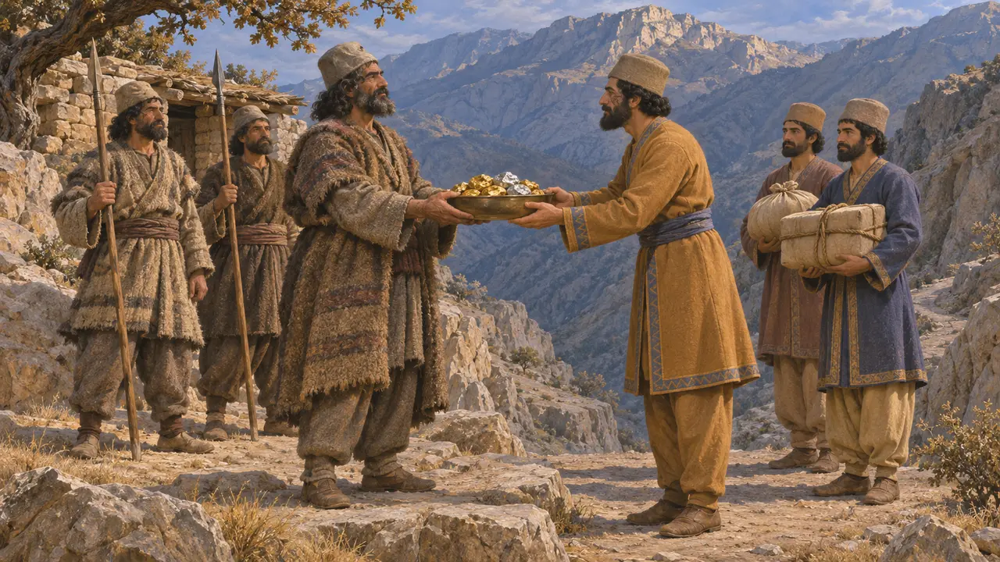
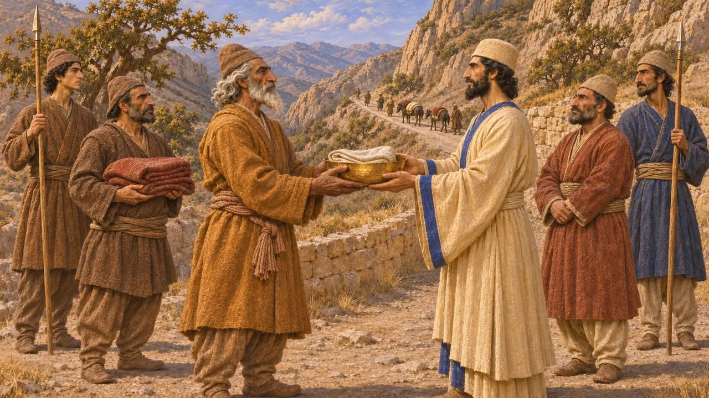
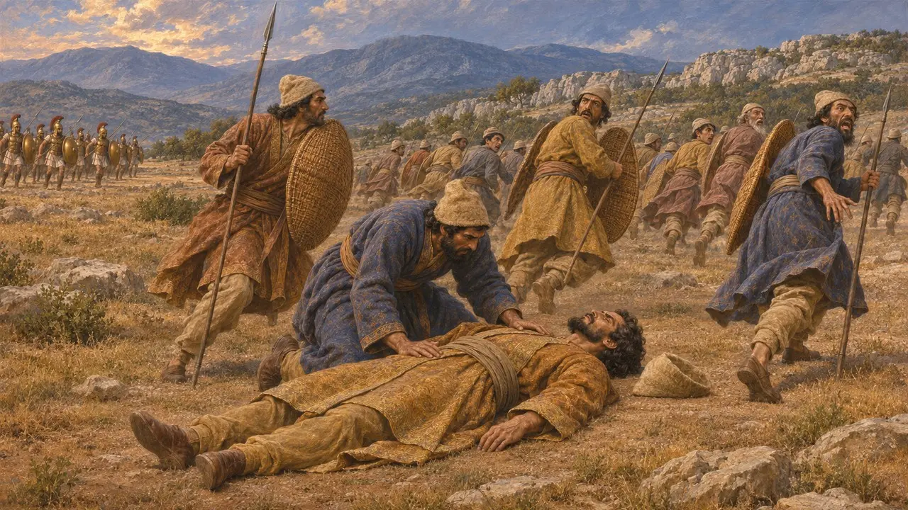

Capo guerriero delle colline
Capo dei popoli montani della Perside e dei suoi confini, VI-IV secolo a.C.
Le montagne tra Susa e la Perside, e quelle verso la Media, erano la patria di popoli di pastori come gli Uxi e i Cossei, che gli scrittori greci descrivono come mai del tutto sottomessi ai re persiani. Arriano e Strabone riferiscono che i re versavano loro compensi o doni in cambio del libero passaggio. Nessuna fonte superstite nomina un capo di questi popoli tra il 530 e il 479, perciò il capo guerriero del gioco è una ricostruzione basata su testimonianze più tarde.
Nel gioco: Un'unità nemica leggera, con un nome diverso in ogni livello, i cui predoni entro 10 caselle colpiscono il 15% più forte; uccidilo e la sua divisione ripiega. Nessuna fonte mostra capi delle colline alla guida di divisioni di una grande armata; questa impostazione è del gioco.

I popoli delle colline
Racconto anticoErodoto elenca le tribù dei Persiani e afferma che alcune erano composte da agricoltori sedentari, mentre altre, tra cui i Mardi, erano nomadi. Autori successivi che narrano le campagne di Alessandro nominano altri popoli montani ai margini della Perside, dell'Elam e della Media, come gli Uxi e i Cossei. Li descrivono come pastori che controllavano i passi tra le pianure e il cuore della Persia.
Herodotus 1.125; Arrian, Anabasis 3.17 and 7.15

Pagare i capi delle montagne
Racconto anticoArriano afferma che gli Ussi delle montagne avrebbero lasciato passare Alessandro per il loro valico tra Susa e la Perside solo se avesse pagato ciò che avevano ricevuto dai re persiani. Strabone, attingendo a Nearco, nomina quattro popoli predoni di queste montagne e dice che i Cossei ricevevano doni dai re. Alessandro rifiutò di pagare e attaccò gli Ussi nell'inverno del 331-330, e in seguito condusse una campagna invernale contro i Cossei.
Arrian, Anabasis 3.17; Strabo, Geography 11.13.6; Arrian, Anabasis 7.15

Dono, tributo o patto
ContesoGli autori greci e romani presentano questi pagamenti come un segno di debolezza del Re. Pierre Briant ha sostenuto invece che si trattasse di un rapporto negoziato, in cui il Re scambiava doni con i capi montani per tenere aperte le vie e legarli a sé. Le notizie riguardano l'epoca di Alessandro e ci giungono attraverso autori molto più tardi, perciò non sappiamo come questi popoli trattassero con Ciro o Dario.
P. Briant, État et pasteurs au Moyen-Orient ancien, 1982; P. Briant, From Cyrus to Alexander, 2002

Quando cadeva il comandante
Racconto anticoGli eserciti antichi spesso si sbandavano alla morte del loro comandante. Erodoto narra che la resistenza persiana a Platea crollò non appena Mardonio fu ucciso, e Senofonte descrive come la morte di Ciro il Giovane a Cunassa pose fine alla sua causa. La regola del gioco per cui una divisione ripiega quando il suo capo muore segue questo schema generale, non una testimonianza specifica sui popoli delle colline.
Herodotus 9.63; Xenophon, Anabasis 1.8
Fonti
- Arrian, Anabasis 3.17
- Strabo, Geography 11.13.6
- Herodotus 1.125
- P. Briant, État et pasteurs au Moyen-Orient ancien, 1982
- P. Briant, From Cyrus to Alexander, 2002
- Arrian, Anabasis 7.15